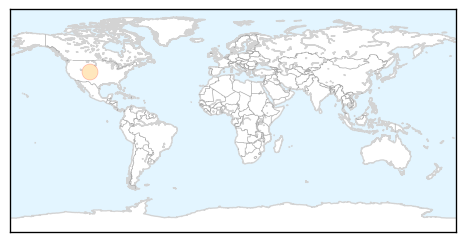
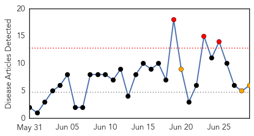
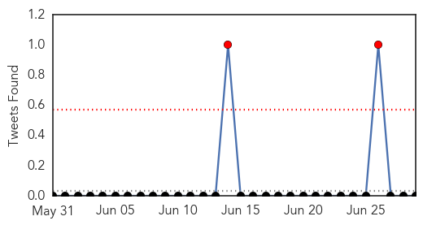
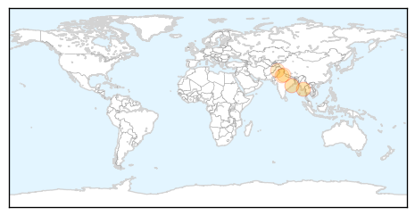

Bubonic Plague
30-Day Web Trend
1 alerts, 0 warnings

30-Day Twitter Trend
0 alerts, 0 warnings

Article Locations
Article Confidences

Top Articles:
Top Tweets:
-
No tweets found for Jun 29, 2015
Dengue Fever
30-Day Web Trend
3 alerts, 3 warnings

30-Day Twitter Trend
3 alerts, 0 warnings

Article Locations
Article Confidences

Top Articles:
- 0.969
- Odisha capital, nearby areas a den for dengue viruses!
- 0.969
- Over 10,000 people infected dengue fever in Myanmar so far this year - Xinhua
- 0.867
- Were you told about dengue?
- 0.722
- Govt reviews dengue, malaria preparedness of civic bodies
- 0.676
- Govt reviews dengue, malaria preparedness of civic bodies
- 0.664
- EPA inspects 142 sites under anti-dengue drive; seals nine
Top Tweets:
-
No tweets found for Jun 29, 2015